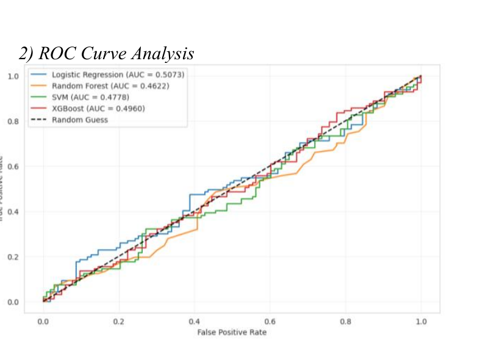

XGBoost · 0.9610
The strongest AUC-ROC suggests the model was best at separating positive and negative cases across thresholds.
Human-centered AI · Mental-health technology
A sole-authored study of whether academic pressure, sleep, study patterns, and psychological indicators can help flag mental-health risk earlier. It compares four models while framing prediction as support for human follow-up.
The analysis uses a Kaggle-sourced dataset of demographic, academic, lifestyle, and psychological variables. It asks whether patterns across these sources can distinguish depression status more reliably than any single signal.
This is a retrospective model comparison, not a live monitoring or diagnostic system. Its value lies in informing careful human follow-up; clinical use would require further validation, privacy safeguards, and professional judgment.
| Model | Accuracy | Precision | Recall | F1-score | AUC-ROC |
|---|---|---|---|---|---|
| Logistic regression | 0.8550 | 0.9149 | 0.8037 | 0.8557 | 0.9218 |
| Random forest | 0.8375 | 0.8461 | 0.8831 | 0.8642 | 0.9116 |
| SVM | 0.8429 | 0.8507 | 0.8874 | 0.8687 | 0.9103 |
| XGBoost | 0.8319 | 0.8314 | 0.8319 | 0.8315 | 0.9610 |
The strongest AUC-ROC suggests the model was best at separating positive and negative cases across thresholds.
It reached the highest accuracy and precision in the reported comparison, making it a useful interpretable baseline.
SVM reported the highest recall and F1-score, highlighting a different trade-off for identifying possible positive cases.
These percentages are the paper's reported XGBoost feature importances—not individual risk probabilities or proof that a factor causes depression. Academic pressure ranked highest, followed by sleep duration and work or study hours.
The paper reports weaker accuracy for extreme sleep-duration groups. Its Kaggle-sourced sample, limited demographic diversity, and the privacy implications of sensitive behavioral data all need attention before real-world use.

